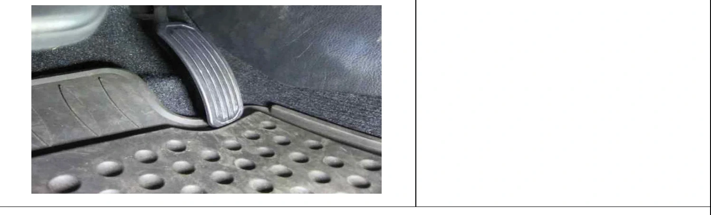

751. 가속페달이 운전석 매트에 끼여 되돌아오지 않아 가속될 경우, 운전자가 안전하게 정차 또는 감속할 수 있는 방법 2가지는?

- ①제동페달을 힘껏 세게 밟는다.
- ②비상점멸표시등 버튼을 지속 조작한다.
- ③경음기를 강하게 누르며 주행한다.
- ④전자식 주차브레이크(EPB)를 지속 조작한다.
- ⑤조향핸들을 강하게 좌우로 조작한다.
정답 보기
정답
① 제동페달을 힘껏 세게 밟는다.
④ 전자식 주차브레이크(EPB)를 지속 조작한다.
근거·해설
가속페달이 물체(매트, 이물질 등)에 끼어 지속적으로 조작되더라도 제동페달을 조작할 경우 브레이크 오버라이드 (BOS, Brake Override System) 기능이 작동하여 제동신호를 우선하여 감속 및 정차 가능 전자식 주차브레이크(EPB)는 비상제 동기능이 포함되어 있으므로 지속 조작할 경우 감속 또는 조작 가능. - 의도하지 않는 가속상황에서도 동일한 방법으로 정차 또는 감속 가능 ※ 의도하지 않는 가속상황이란? ∘기계적 결함으로 인한 가속페달 고착 ∘가속페달 바닥매트 걸림 ∘외부 물체(물병, 신발, 물티슈 등) 끼임 등으로 가속페달이 복귀되지 않는 경우